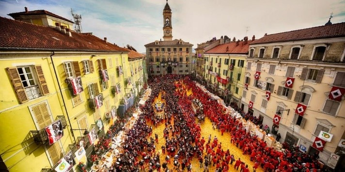
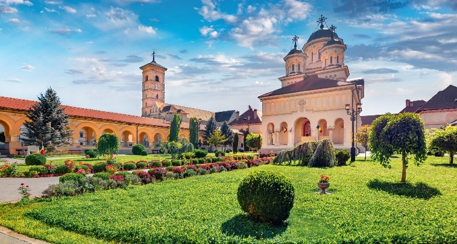

Venice
Venice is a historic city in northeastern Italy and the capital of the Veneto region. Built across more than 100 small islands in the Venetian Lagoon, it is world-famous for its canals, Renaissance architecture, and rich cultural heritage. Once a powerful maritime republic, Venice remains one of the most visited cities in the world for its beauty and art.
Key Facts:
- Founded: 5th–6th century CE
- Region: Veneto, Italy
- Population: About 250,000 (metropolitan area)
- UNESCO status: World Heritage Site (since 1987)
- Known as: “La Serenissima” and “The City of Canals”
History and heritage
Venice emerged after the fall of the Roman Empire, when lagoon settlers sought refuge from invasions. By the Middle Ages it grew into the Republic of Venice—a dominant naval and trade power linking Europe and the East. The republic’s influence is visible in the city’s mix of Byzantine, Gothic, and Renaissance art and architecture. Venice declined after 1797, when it was conquered by Napoleon and later became part of unified Italy in 1866.

Siena
Siena is a historic city in Tuscany, central Italy, known for its medieval architecture, distinctive brick buildings, and rich artistic legacy. The city’s preserved Gothic character and its famous horse race, the Palio di Siena, make it one of Italy’s most visited and culturally significant destinations.
Key Facts:
- Region: Tuscany, Italy
- Population: About 53,000 (2023)
- UNESCO status: Historic Centre of Siena (since 1995)
- Founded: Etruscan origins; expanded during Roman era
- Famous event: Palio di Siena horse race (twice yearly)
Historical background
Siena’s origins trace back to the Etruscan civilization and later to a Roman colony named Sena Julia. During the Middle Ages, it became a wealthy independent city-state, rivaling nearby Florence. Its golden age in the 13th and 14th centuries produced great art, architecture, and a powerful banking tradition that helped shape the city’s identity.

Ivrea
Ivrea is a historic town in the Metropolitan City of Turin, Piedmont, northwestern Italy. It lies on the Dora Baltea River, about 55 km north of Turin, and is known for its Roman roots, medieval heritage, and 20th-century industrial architecture linked to the Olivetti company. Since 2018, it has been inscribed as a UNESCO World Heritage Site.
Key Facts:
- Region: Piedmont, Italy
- Population: 1468–1587
- Elevation: 253 m (830 ft)
- UNESCO status: Inscribed 2018 as “Ivrea, Industrial City of the 20th Century”
- Known for: Olivetti legacy and the Battle of the Oranges Carnival
Historical background
Founded around 100 BC as the Roman settlement Eporedia, Ivrea occupied a strategic position controlling access to the Aosta Valley. During the Middle Ages it became a Lombard duchy, later ruled by the House of Savoy. Its medieval quarter still features narrow streets, defensive towers, and monuments such as the Cathedral of Santa Maria Assunta.

Alba
Alba is a historic town in the Piedmont (Piemonte) region of northwestern Italy, located in the province of Cuneo. It is renowned for its fine wines, white truffles, and scenic setting amid the rolling hills of the Langhe, a UNESCO World Heritage landscape celebrated for viticulture.
Key Facts:
- Region: Piedmont, Italy
- Province: Cuneo
- Population: About 31,000 (2023 estimate)
- Known for: White truffles, Barolo and Barbaresco wines, medieval towers
- UNESCO designation: Part of the Langhe-Roero and Monferrato vineyard landscapes (2014)
Historical background
Founded as the Roman town Alba Pompeia, Alba developed as a strategic settlement along the Tanaro River. Through the Middle Ages it became a self-governing commune marked by numerous brick towers—symbols of noble families’ influence—many of which still define its skyline. Its heritage blends Roman, medieval, and Renaissance layers visible in the urban fabric.
